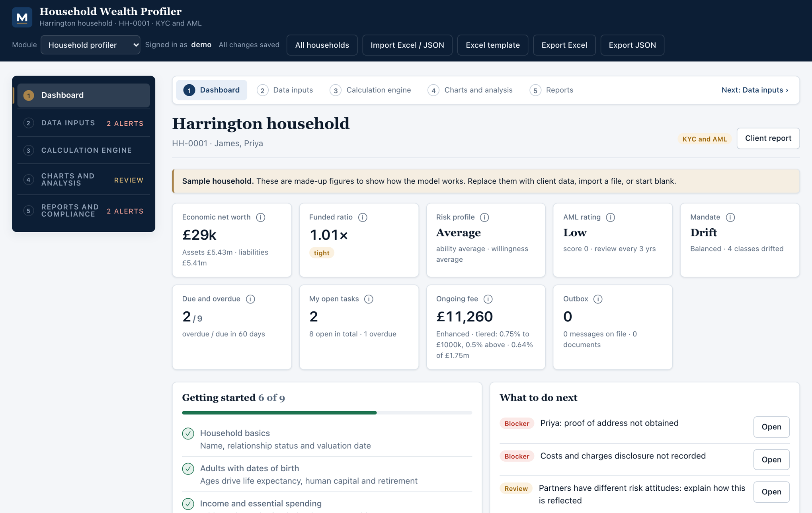
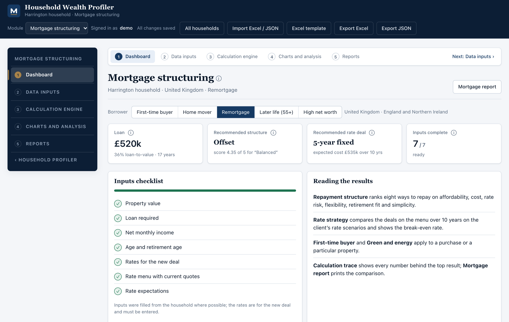
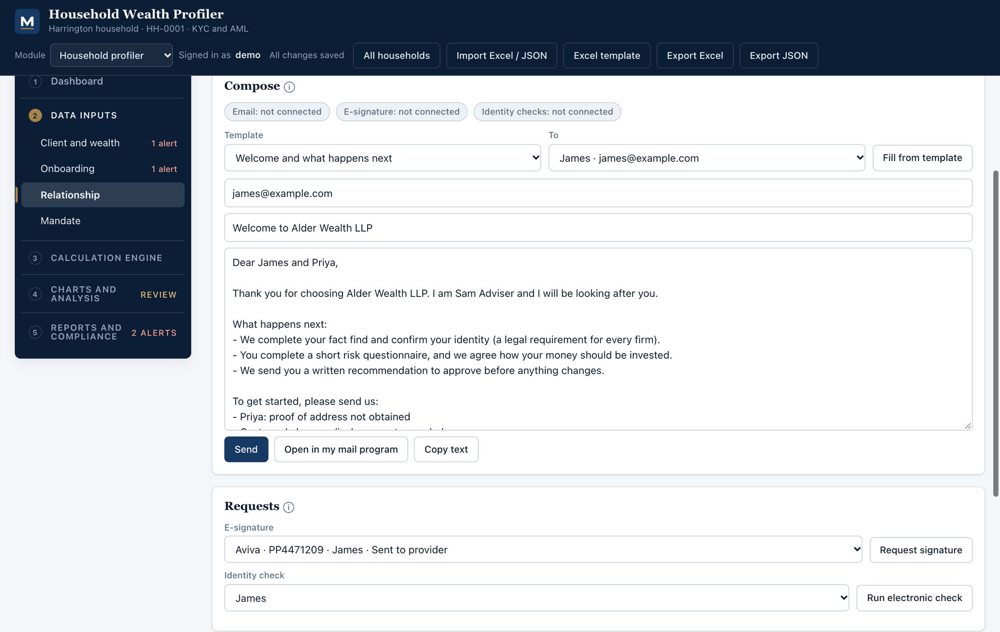

One system for a UK wealth firm: KYC and AML onboarding, the CFA economic balance sheet, risk profiling, the investment mandate, the relationship workflow and household mortgage structuring. Every number traceable to its inputs, every step explained for an analyst.

Both modules use the same shape. Inputs sit in one place, the engine shows its working with the client's own figures, the charts read from the engine and the reports print what the client sees.
Economic net worth, funded ratio, risk profile, AML rating, mandate status, what to do next and my open tasks.
Tabbed pages for the client and their wealth, onboarding, the relationship and the mandate. Excel template and import for new clients.
Assumptions and a step-by-step trace: human capital, pension rights, deferred tax, funded ratio, risk scoring.
Balance sheet, life-event scenarios, tax, risk, mandate drift, fund performance against benchmark.
Client report, KYC status, data checks, reviews due and the audit trail, ready to print or save as PDF.
From the first meeting to the annual review, with the compliance evidence produced as a by-product of doing the work.
Identity, proof of address, screening and source of wealth for each adult. Risk rating with a review cycle, enhanced due diligence triggers and a four-eyes sign-off.
Human capital, pension rights, property, portfolios and debts against future spending, goals and deferred tax, all in today's money.
Ability to take risk scored from the balance sheet, willingness from the questionnaire; the lower of the two sets the level.
Standard instruction checklists create the task sequence, assigned by role and dated. Every dated obligation lands in Reviews due.
Welcome letters, document requests, letter-of-authority covers, review invitations and fee statements written from the file, then sent or queued.
All households, tasks by person, reviews due, issues and server logs in one place, with shared firm settings.
Compare repayment structures, fixed against variable terms, first-time buyer routes and green deals for the same household, with affordability stress and a break-even on every rate choice. UK and Ireland in full, with a reference guide to the rest of Europe and Switzerland.


The file writes the letters. Pick a template and the client names, adviser, firm details, missing documents and review dates are already in place. Send through the firm's email service, or open it in your own mail program and the message is still logged.
Client data is sensitive. The product is built so the firm keeps control of where it lives and who can see it.
Every record is sealed with AES-256-GCM before it is stored. Nothing is overwritten: each save is a new version, and there is no delete.
Field-level audit trail of every change, by whom and when, for each household and for firm settings. Server log of requests and errors.
Sign-in lockout after repeated failures, strict content security policy, cross-site request protection, no runtime dependencies to patch.
Run it on your own server or private cloud, on Vercel with a UK-region database, or as a multi-firm edition on Supabase with two-step sign-in.
Export any household to Excel or JSON at any time. Import a completed template to load a new client in one step.
Email, e-signature, identity checks, calendars and document stores connect through provider slots and environment settings, never through keys stored with client data.
Firm details for letters, the team and their roles, providers, model portfolios, default assumptions and the integrations you use.
Download the Excel template, fill it in with the client, import it. Or start blank and work through the tabbed inputs with the client in the room.
Clear the onboarding blockers, agree the mandate, start the instructions, send the letters. Reviews due and the firm boards keep everyone on track.
Sign in with the demo account you were given, or ask for a walk-through.
Sign in Request a demo